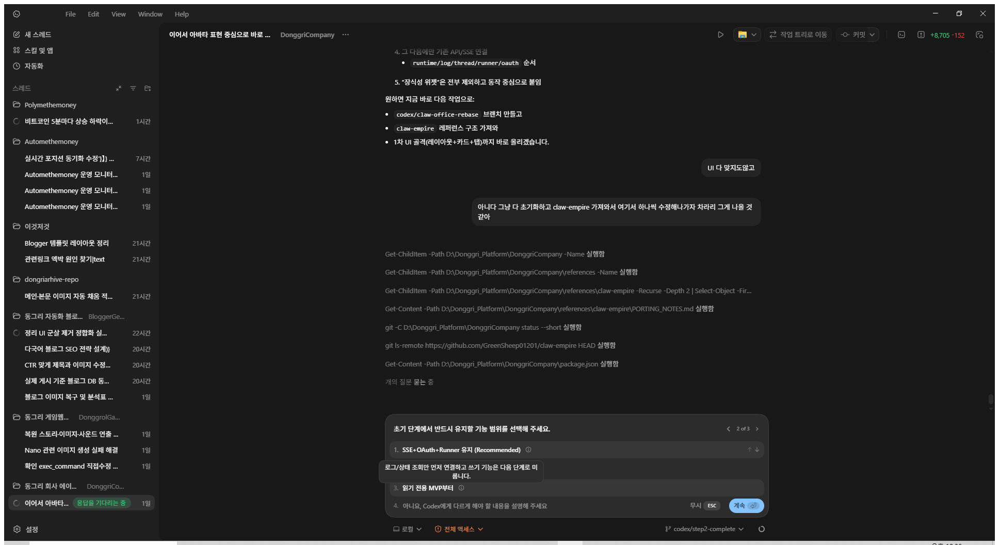

채널 연결 중심 운영
Blogger 2개, Cloudflare 1개를 기준으로 연결 상태만 운영 화면에 노출합니다.
블로그 생성, 자산, 업로드, 운영을 한 화면에서 연결하는 운영 콘솔입니다. 채널별 운영 흐름과 SEO/CTR/색인 지표까지 같이 연결해 일관된 운영 상태를 유지합니다.
Mission Control에서 생성, 업로드, 운영, 지표를 통합 관리합니다. Blogger, Cloudflare, YouTube, Instagram 채널을 연결해 운영 상태를 한 눈에 확인합니다.

Blogger 2개, Cloudflare 1개를 기준으로 연결 상태만 운영 화면에 노출합니다.
프롬프트 편집이 필요한 단계만 노출하고 시스템 단계는 설명만 제공합니다.
동기화 시각과 런타임 상태를 최신으로 유지합니다.
GitHub Pages는 정적 소개와 문서 용도로만 사용합니다. 실제 운영 UI는 Docker 환경의
/dashboard를 기준으로 검증합니다.